M
Manual Operacional
Mesada App — guia funcional de todas as telas e fluxos, passo a passo, com prints reais
Painel do Responsável (Master) · Painel Administrativo · App Mobile (usuário Comum)
Versão gerada a partir do estado real do sistema — validado contra o backend em produção de testes
Sumário
- Introdução
- O que é o Mesada App
- Papéis de usuário
- Painel do Responsável (Web)
- Criar conta (cadastrar a família)
- Entrar no painel
- Recuperar a senha esquecida
- Visão geral do Dashboard
- Minha Família
- Cadastrar e gerenciar filhos (definir a mesada)
- Criar e organizar categorias
- Criar tarefas, atividades e desafios
- Vincular filhos a uma tarefa
- Convidar filho para o app / convidar outro responsável
- Aceitar convite de segundo responsável
- Gerenciar responsáveis (Masters)
- Aprovar ou rejeitar tarefas concluídas
- Consultar extrato e fechar o ciclo de mesada
- Configurar notificações extras
- Meu Perfil: trocar a senha
- Funcionalidades ainda em construção
- Painel Administrativo (equipe interna)
- Entrar no painel administrativo
- Trocar a senha temporária (primeiro acesso)
- Convidar um administrador
- Editar ou desativar um administrador
- Criar e gerenciar grupos de acesso
- Alterar meu e-mail e minha senha
- App Mobile — usuário Comum (filho)
- Entrar com o código de convite
- Consultar minhas tarefas
- Marcar uma tarefa como feita, parcial ou não feita
- Consultar histórico e saldo
- Referência rápida — quem pode fazer o quê
1. Introdução
1.1 O que é o Mesada App
O Mesada App é um sistema para famílias controlarem a mesada dos filhos de forma
combinada e transparente: o responsável define tarefas e atividades (de casa, escola,
esporte, etc.), cada uma com uma forma de recompensar — valor em reais ou pontos
convertidos em reais — e o filho registra quando as cumpre. Ao final de cada período
(o "ciclo de mesada"), o sistema soma bônus e desconta multas de tarefas obrigatórias
não cumpridas, chegando ao valor final daquele ciclo.
O sistema é dividido em três frentes, cada uma coberta neste manual:
| Frente | Para quem | Onde |
|---|
| Painel do Responsável | Pai/mãe/responsável (Master) | Navegador (Web) |
| Painel Administrativo | Equipe interna do produto | Navegador (Web), área separada |
| App do filho | Usuário Comum (filho) | Aplicativo Android/iOS |
1.2 Papéis de usuário
| Papel | O que pode fazer |
|---|
| Responsável Financeiro | Tudo do Responsável, mais: gerenciar assinatura e convidar/remover outros responsáveis. É sempre o primeiro Responsável cadastrado na família. |
| Responsável (Master) | Cadastrar filhos, categorias e tarefas; aprovar tarefas; fechar ciclos de mesada; gerar convites. |
| Comum (filho) | Consultar suas tarefas e indicar quando as cumpriu, pelo app mobile. |
| Administrador | Equipe interna do produto. O grupo "Owner" tem acesso total; outros grupos (ex. "Tecnologia") têm acesso conforme convidados pelo Owner. |
Uma família pode ter mais de um Responsável (ex.: pai e mãe), cada um com login próprio.
2. Painel do Responsável (Web)
2.1 Criar conta (cadastrar a família)
Quem: qualquer pessoa (sem conta ainda)Onde: /cadastro
É o primeiro passo de qualquer família nova — cria a família e o primeiro Responsável, que nasce automaticamente como Responsável Financeiro.
- Na tela de entrada, clique em "Criar conta" (ou acesse
/cadastro diretamente).
- Preencha Nome da família (ex.: "Família Silva"), seu nome, e-mail e uma senha de pelo menos 8 caracteres.
- Repita a senha em Confirmar senha.
- Clique em "Criar conta".
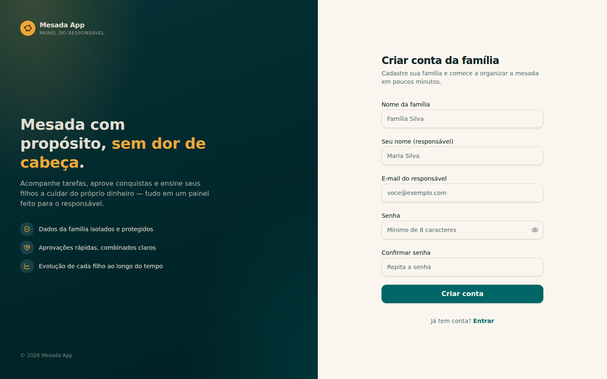
Tela de cadastro da família
Resultado: a conta é criada e você entra direto no Dashboard — não precisa confirmar e-mail nem fazer login separado.
E-mail já cadastrado: a tela avisa e sugere entrar na conta existente em vez de criar outra.
2.2 Entrar no painel
Quem: Responsável já cadastradoOnde: /login
- Acesse a tela de entrada e informe o e-mail e a senha cadastrados.
- Clique em "Entrar".
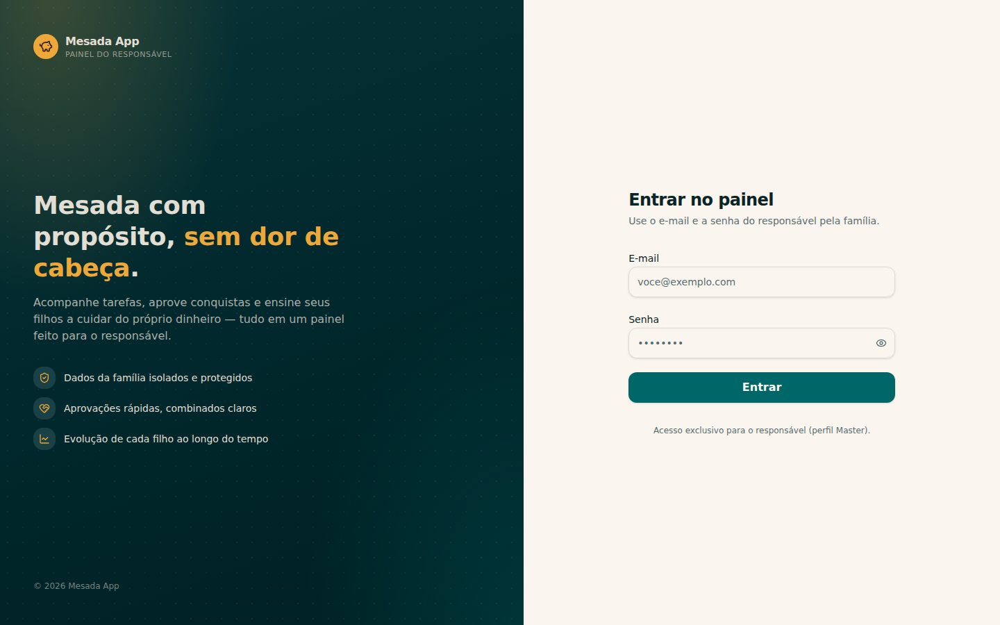
Tela de entrada, com o link para criar conta
Senha ou e-mail incorretos mostram a mensagem "E-mail ou senha incorretos" — sem indicar qual dos dois está errado, por segurança.
2.3 Recuperar a senha esquecida
Quem: qualquer Responsável, mesmo sem conseguir entrarOnde: /esqueci-senha → link recebido por e-mail → /redefinir-senha
- Na tela de entrada, clique em "Esqueci minha senha".
- Informe o e-mail da conta e clique em "Enviar link".
- Abra o e-mail recebido e clique no link de redefinição.
- Informe a nova senha (mínimo 8 caracteres) e confirme.
- Clique em "Redefinir senha" e entre com a nova senha.
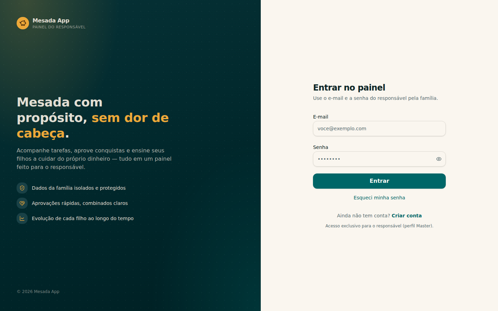
Link "Esqueci minha senha" na tela de entrada
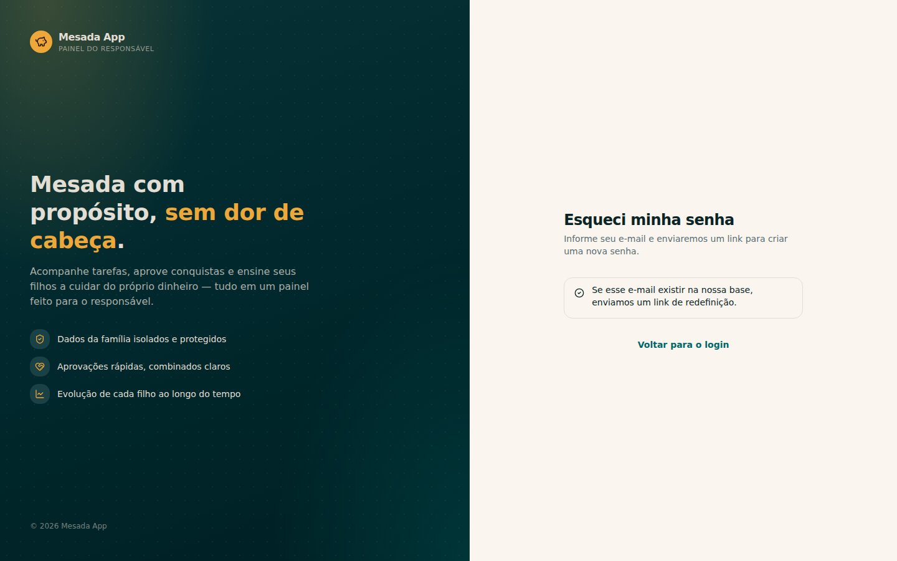
Mensagem exibida após enviar o e-mail — sempre a mesma, exista ou não a conta
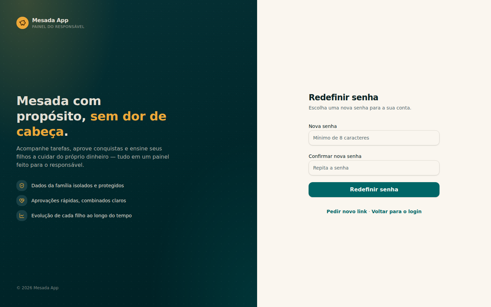
Formulário de nova senha, aberto a partir do link do e-mail
Por segurança: a mensagem após enviar o e-mail é sempre a mesma, exista ou não uma conta com aquele endereço — isso evita que alguém descubra quais e-mails têm conta no sistema. O link de redefinição expira em 30 minutos e só pode ser usado uma vez.
2.4 Visão geral do Dashboard
Quem: qualquer ResponsávelOnde: /dashboard, primeira tela após entrar
Não é um fluxo de ação — é o resumo do estado atual da família: quantos filhos, saldo devedor total, quantos filhos estão com dívida, e o saldo individual de cada um.
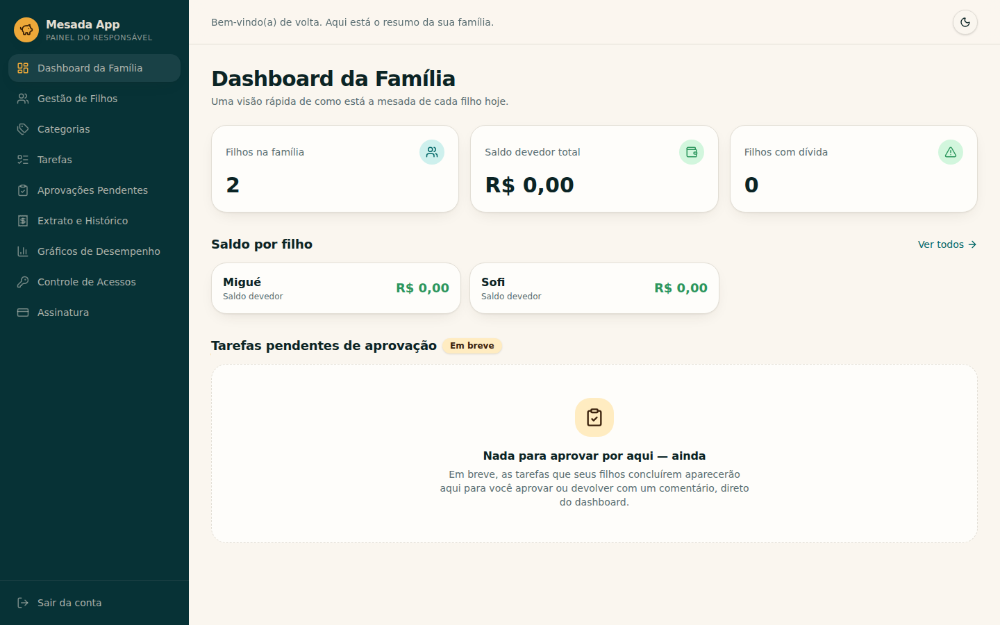
Dashboard com dados reais de uma família com 2 filhos
2.5 Minha Família
Quem: qualquer ResponsávelOnde: /familia → "Minha Família"
Edita o nome da família e o ciclo de fechamento padrão usado como sugestão ao cadastrar um novo filho.
- Abra "Minha Família" no menu lateral.
- Altere o Nome da família e/ou o Ciclo de fechamento padrão (Semanal, Quinzenal, Mensal ou Personalizado).
- Clique em "Salvar".
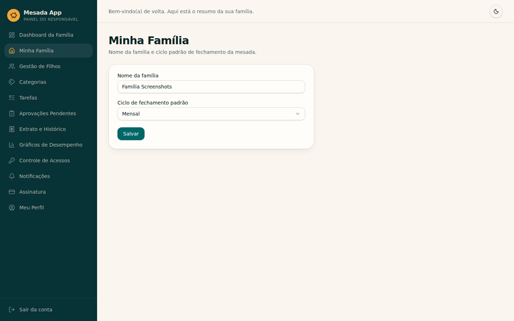
Tela de edição do nome da família e ciclo padrão
Mudar o ciclo padrão aqui não altera o ciclo de fechamento de filhos já cadastrados — só passa a ser a sugestão para os próximos.
2.6 Cadastrar e gerenciar filhos (definir a mesada)
Quem: qualquer ResponsávelOnde: /filhos → "Gestão de Filhos"
É aqui que se define a mesada de cada filho: o valor-base do ciclo, a periodicidade de fechamento e, se algum dia usar tarefas por pontos, o valor de cada ponto em reais.
- Abra "Gestão de Filhos" no menu lateral e clique em "Novo filho".
- Preencha Nome (obrigatório) e, opcionalmente, um Apelido.
- Escolha o Ciclo de fechamento: Semanal, Quinzenal, Mensal ou Personalizado.
- Informe a Mesada base (R$) — o valor de partida de cada ciclo, antes de bônus e multas.
- Se for usar tarefas por pontos com este filho, informe o Valor do ponto (R$).
- Clique em "Salvar".
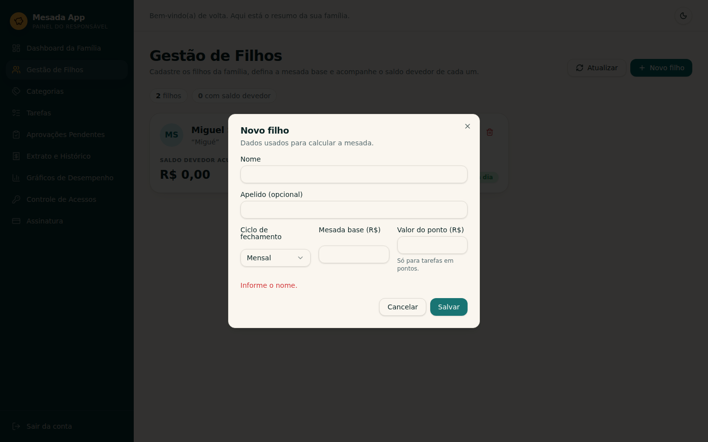
Formulário de novo filho — nome em branco bloqueado com mensagem clara
Validações: nome é obrigatório; mesada base não pode ser negativa; valor do ponto, se informado, precisa ser maior que zero.
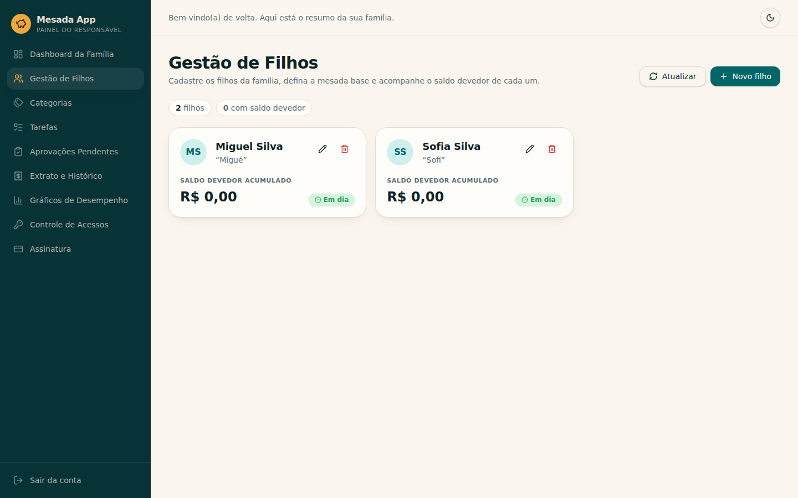
Lista de filhos cadastrados, com saldo devedor e status "Em dia"
Editar: clique no ícone de lápis no card do filho — mesmo formulário, já preenchido.
Remover: clique no ícone de lixeira — remoção lógica (o histórico da família não se perde).
2.7 Criar e organizar categorias
Quem: qualquer ResponsávelOnde: /categorias
Categorias agrupam as tarefas (Casa, Escola, Esporte, etc.). O sistema já vem com categorias padrão — marcadas como "Padrão" — que não podem ser editadas nem removidas, iguais para todas as famílias.
- Clique em "Nova categoria".
- Informe o Nome.
- Opcionalmente, escolha uma Categoria pai para criar uma subcategoria.
- Clique em "Salvar".
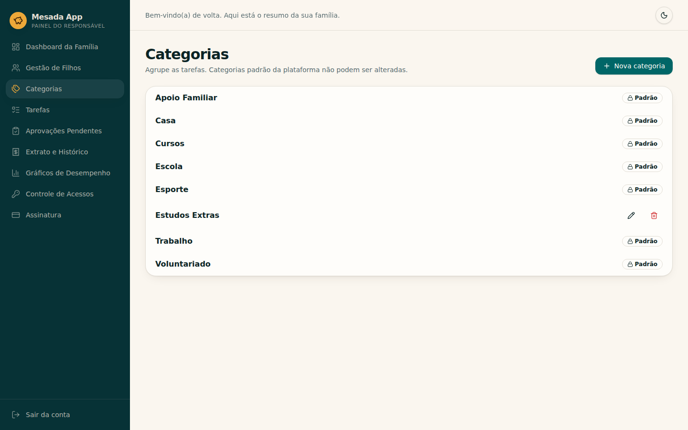
Categorias padrão (cadeado) e uma customizada ("Estudos Extras", editável)
Categorias customizadas podem ser editadas (ícone de lápis) ou removidas (ícone de lixeira) a qualquer momento.
2.8 Criar tarefas, atividades e desafios
Quem: qualquer ResponsávelOnde: /tarefas
É o coração do sistema: cada tarefa define como ela é recompensada (ou multada) quando um filho a cumpre ou deixa de cumprir.
- Clique em "Nova tarefa".
- Escolha a Categoria e dê um Nome (e, opcionalmente, uma Descrição).
- Escolha o Modo de cálculo: Valor em R$ (informe o valor direto) ou Pontos (informe a pontuação — o filho precisa ter um "valor do ponto" cadastrado).
- Use "Sugerir valor" se quiser que o sistema calcule um valor equilibrado, dividindo a mesada base pela quantidade de tarefas já vinculadas ao filho escolhido.
- Escolha o Tipo: Recorrente (repete a cada ciclo) ou Avulsa (tem uma data-limite — "Válida até").
- Escolha a Natureza: Bônus (soma valor quando cumprida) ou Obrigatória (não soma nada quando cumprida, mas gera uma multa configurável quando não cumprida).
- Escolha a Evidência exigida: Nenhuma, Foto, ou Integração automática (Strava, Google Fit ou Apple Health, para tarefas de esporte).
- Ligue "Aceita parcial" se o filho puder registrar uma conclusão parcial (ex.: 50% de uma meta).
- Ligue "Requer aprovação do responsável" se um Responsável precisa validar antes do valor entrar no ciclo (padrão: ligado para tarefas com evidência manual).
- Clique em "Salvar".
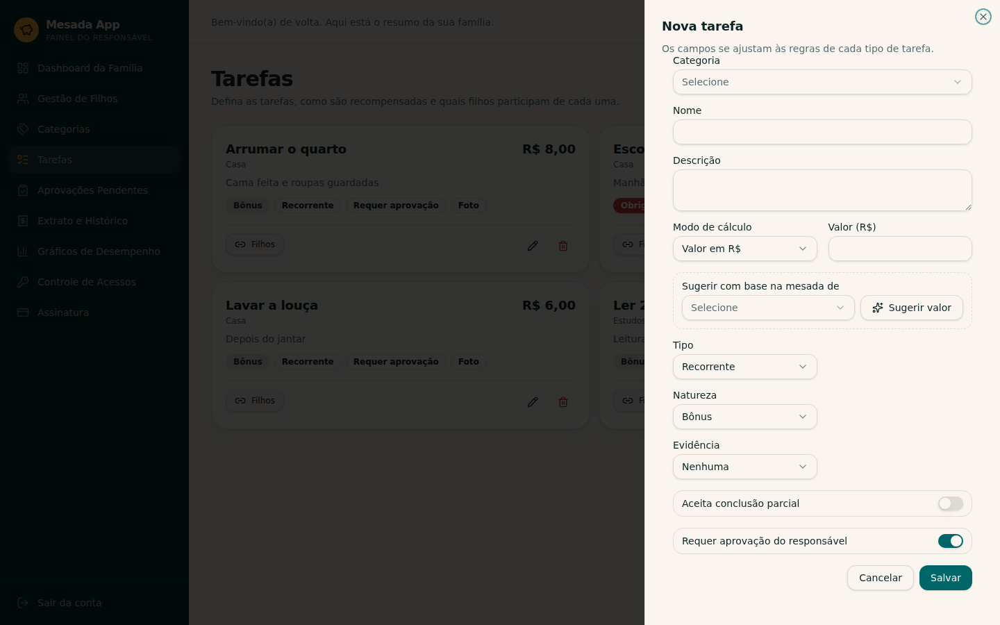
Formulário de nova tarefa — campos se ajustam ao tipo escolhido
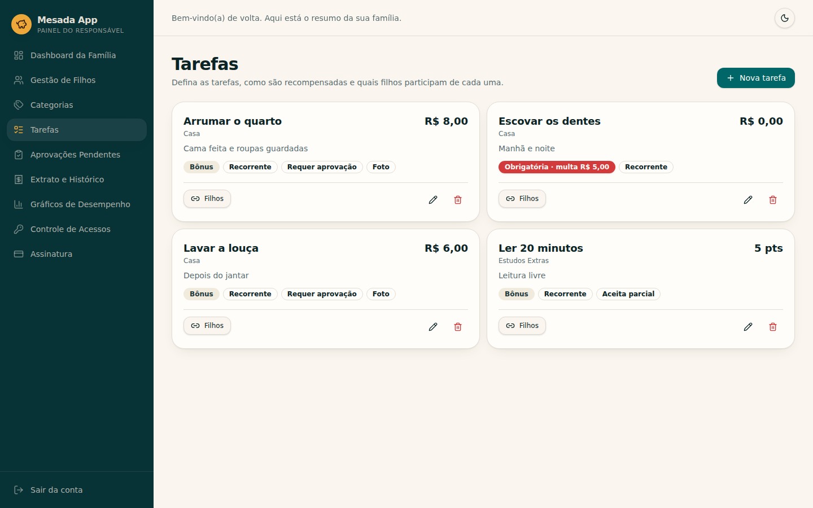
Tarefas cadastradas: bônus, obrigatória com multa, e uma em modo Pontos
2.9 Vincular filhos a uma tarefa
Quem: qualquer ResponsávelOnde: /tarefas → botão "Filhos" no card da tarefa
Uma tarefa só gera valor para um filho depois de ele estar vinculado (aderente) a ela — é possível ter tarefas diferentes para cada filho, ou a mesma tarefa para todos.
- No card da tarefa, clique em "Filhos".
- Para cada filho, informe opcionalmente um valor (ou pontuação) diferente do padrão da tarefa só para ele.
- Clique em "Vincular" para aquele filho.
- Para desvincular, clique no ícone ao lado do botão "Vincular".
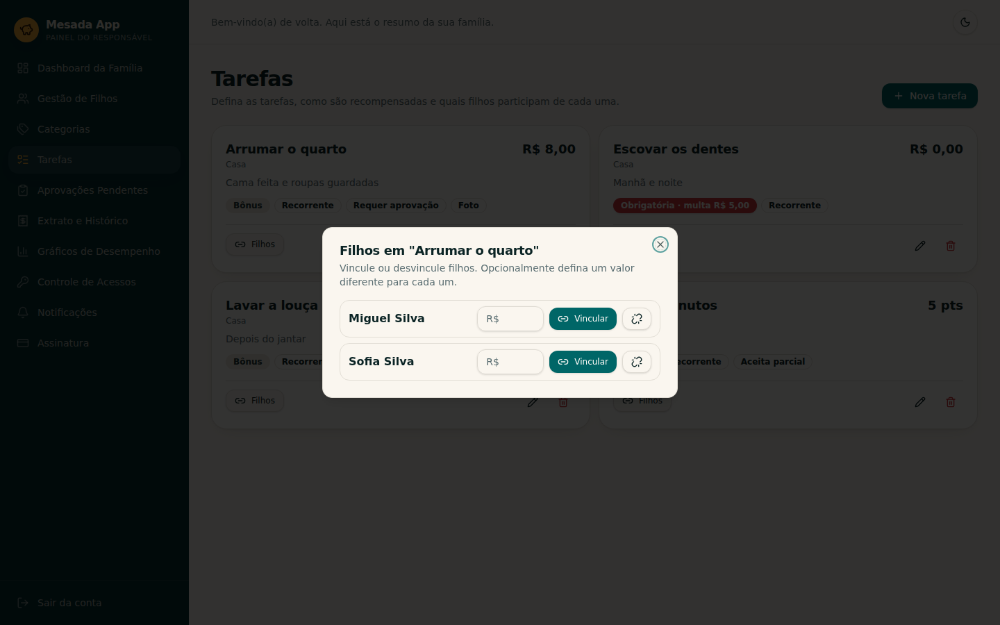
Vinculando Miguel e Sofia à tarefa "Arrumar o quarto"
2.10 Convidar filho para o app / convidar outro responsável
Quem: qualquer ResponsávelOnde: /acessos → aba "Convites"
O filho não tem e-mail nem senha — ele entra no app mobile usando um código de convite. Um segundo Responsável (ex.: cônjuge) também entra por convite.
- Abra "Controle de Acessos" → aba "Convites" → "Gerar convite".
- Escolha o Tipo de convite: "Filho (app mobile)" ou "Segundo responsável".
- Se for filho, selecione qual filho (já cadastrado em "Gestão de Filhos"). Se for responsável, informe o nome do convidado.
- Clique em "Gerar".
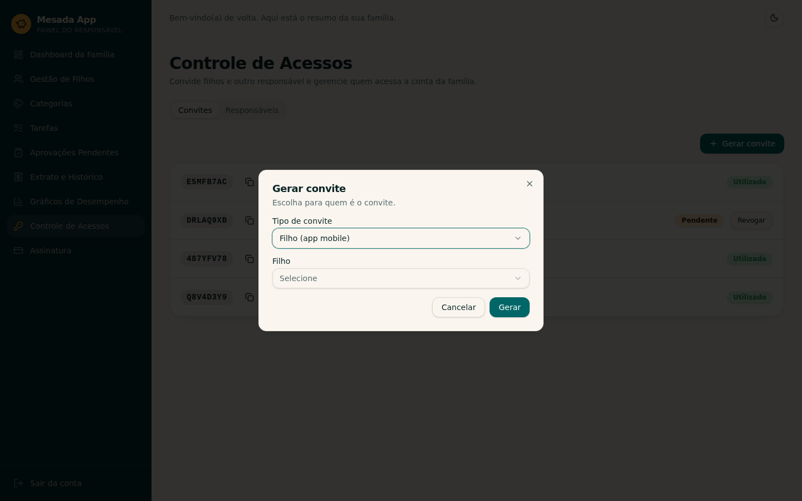
Escolhendo o tipo de convite
O código gerado aparece grande na tela, com botão de copiar — compartilhe por WhatsApp, mensagem, etc. Cada código expira em um prazo determinado e pode ser revogado antes de ser usado. Para um convite de "Segundo responsável", também aparece um link pronto para compartilhar — quem recebe só precisa abri-lo, o código já vem preenchido.
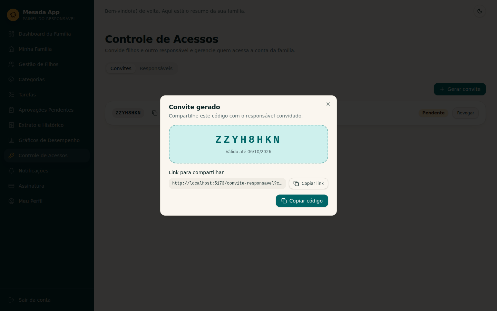
Convite de segundo responsável, com o código e o link para compartilhar
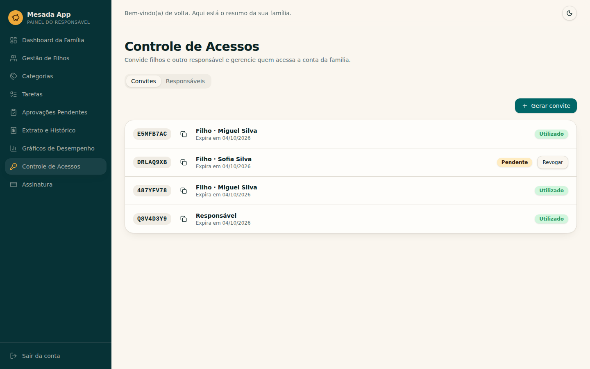
Lista de convites: pendente, utilizado e a opção de revogar
2.11 Aceitar convite de segundo responsável
Quem: a pessoa convidada (ainda sem conta)Onde: /convite-responsavel
Diferente do convite de filho (que só vincula um dispositivo do app mobile), o convite de responsável cria uma conta nova com e-mail e senha próprios.
- Abra o link recebido (ou acesse
/convite-responsavel e informe o código do convite manualmente).
- Informe e-mail e uma senha de pelo menos 8 caracteres, e confirme.
- Clique em "Aceitar convite".
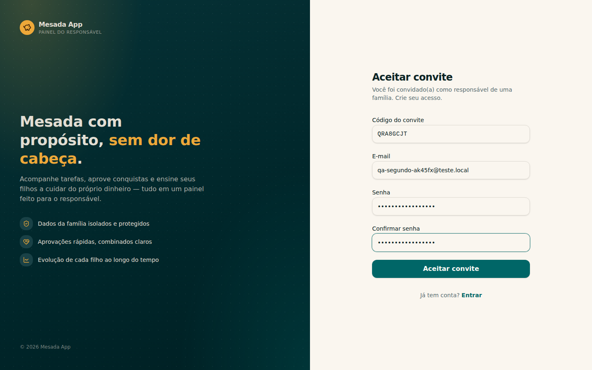
Tela de aceite do convite, com o código já preenchido a partir do link
Resultado: a conta do novo Responsável é criada na mesma família de quem enviou o convite, e a pessoa já entra direto no Dashboard.
E-mail já cadastrado: a tela avisa e sugere entrar na conta existente em vez de criar outra.
2.12 Gerenciar responsáveis (Masters)
Quem: qualquer Responsável (desativar é bloqueado em certos casos)Onde: /acessos → aba "Responsáveis"
Não existe cadastro direto de um segundo responsável — ele só entra por convite (seção anterior). Aqui você só visualiza e pode desativar.
Bloqueios de segurança: não é possível desativar a própria conta, nem desativar o único Responsável Financeiro ativo da família — sempre precisa haver pelo menos um.
2.13 Aprovar ou rejeitar tarefas concluídas
Quem: qualquer ResponsávelOnde: /aprovacoes
Toda tarefa marcada como concluída pelo filho no app mobile, que exija aprovação, aparece aqui aguardando decisão do Responsável.
- Abra "Aprovações Pendentes".
- Confira o valor/pontos que a execução vai gerar se aprovada.
- Clique em "Aprovar" (o valor entra no ciclo) ou "Rejeitar" (a execução vira "Não feito", sem gerar valor).
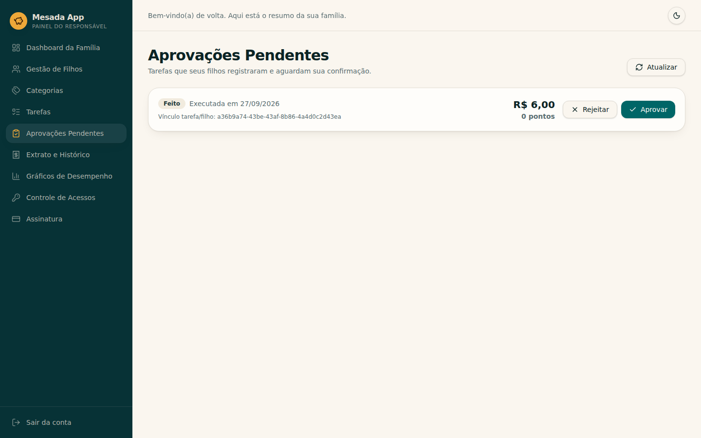
Uma execução pendente aguardando aprovação
Ajuste conhecido: nesta versão a lista ainda identifica a execução por um código técnico em vez do nome do filho/tarefa — a API já foi corrigida para enviar os nomes, falta só a tela consumir esse campo novo.
2.14 Consultar extrato e fechar o ciclo de mesada
Quem: qualquer ResponsávelOnde: /extrato
- Abra "Extrato e Histórico" e escolha o filho no seletor.
- Veja a prévia do período em andamento: mesada base, bônus, multas, saldo devedor anterior e o valor final previsto — nada disso está salvo ainda.
- Quando o período terminar de verdade, clique em "Fechar ciclo", confirme as datas de início e fim, e clique em "Fechar ciclo" no diálogo.
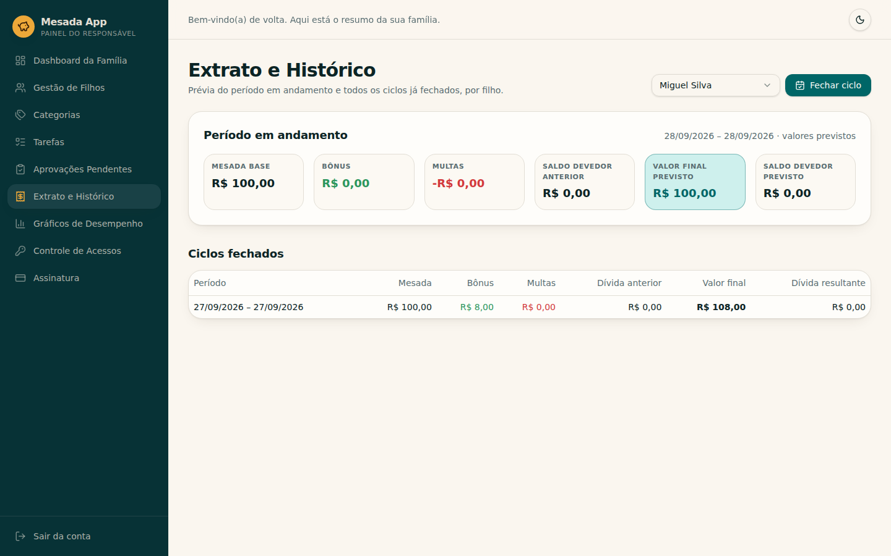
Prévia do período atual e o histórico de ciclos já fechados
Atenção: fechar um ciclo é definitivo — os valores daquele período não podem ser recalculados depois.
2.15 Configurar notificações extras
Quem: qualquer ResponsávelOnde: /notificacoes
Além do e-mail principal do Responsável, é possível cadastrar e-mails e telefones extras (ex.: o outro avô, uma babá) para também receberem os alertas da família.
- Abra "Notificações" e clique em "Adicionar destinatário".
- Escolha o Tipo: E-mail ou Telefone.
- Informe o valor — telefone precisa estar no formato internacional, ex.
+5511999999999.
- Clique em "Adicionar".
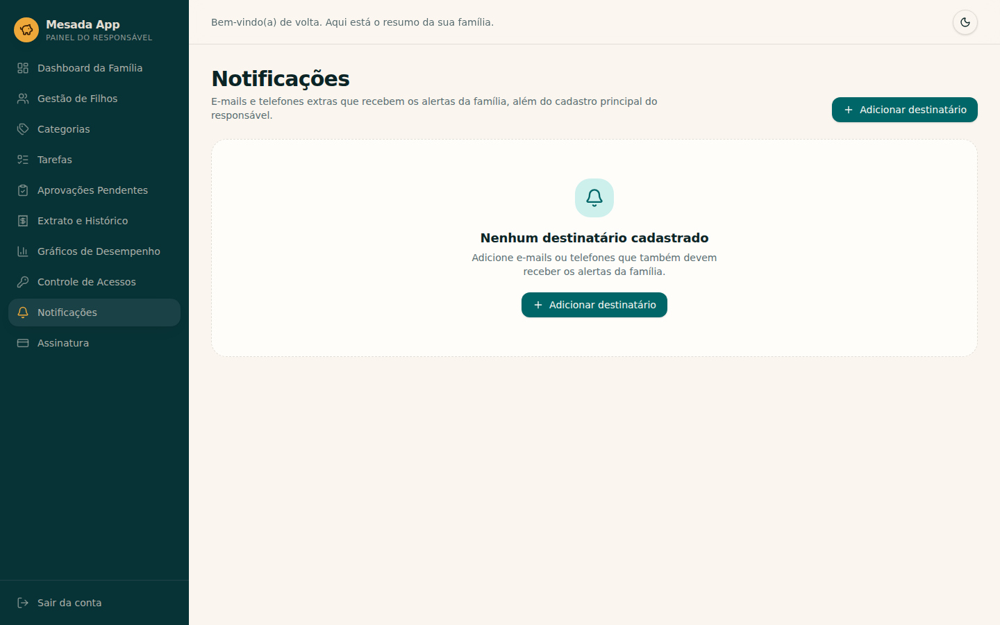
Tela sem nenhum destinatário cadastrado ainda
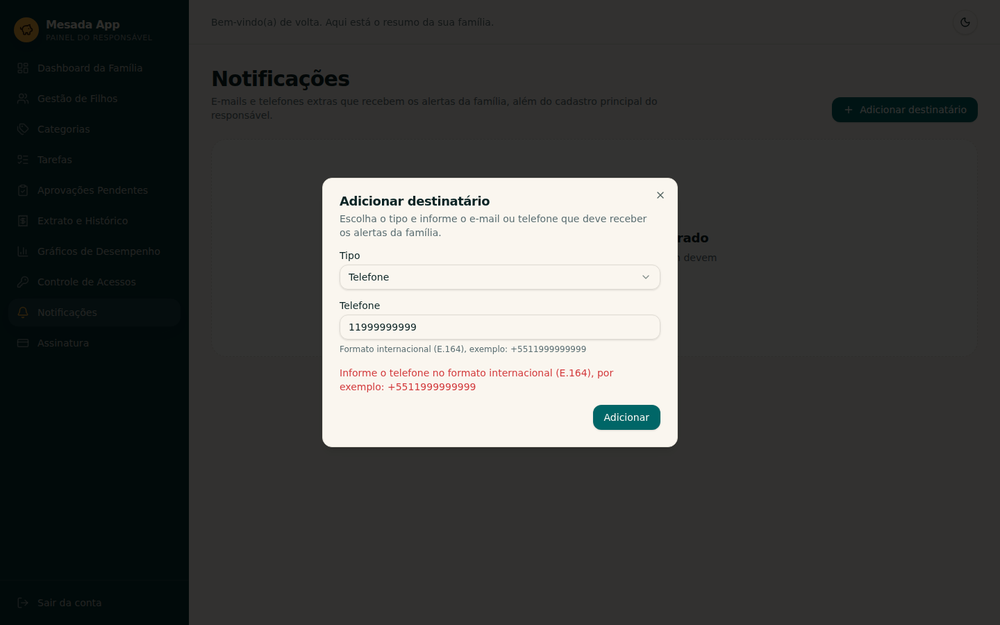
Telefone fora do formato — mensagem explica o formato esperado
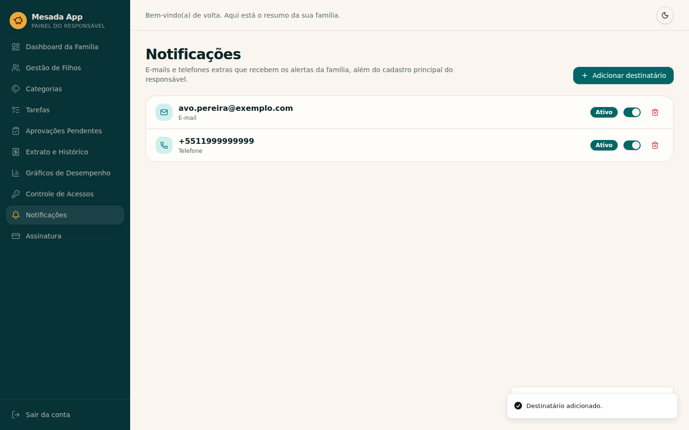
Um e-mail e um telefone cadastrados, ambos ativos
Cada destinatário tem um interruptor para ativar/desativar sem precisar remover, e um botão para remover definitivamente (com confirmação).
2.16 Meu Perfil: trocar a senha
Quem: qualquer Responsável, já logadoOnde: /perfil → "Meu Perfil"
Para trocar a senha sem precisar do fluxo por e-mail — usado quando o Responsável ainda lembra a senha atual, mas quer definir uma nova.
- Abra "Meu Perfil" no menu lateral.
- Informe a Senha atual, a Nova senha (mínimo 8 caracteres) e confirme.
- Clique em "Trocar senha".
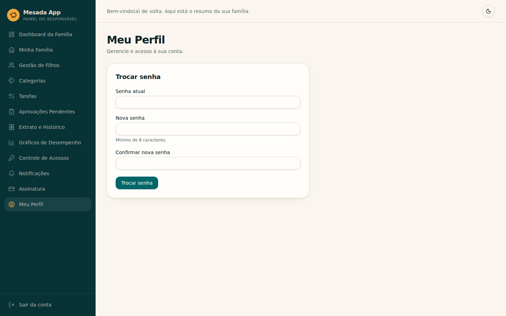
Tela de troca de senha, com os três campos
Se a senha atual informada estiver errada, a tela mostra o erro e mantém você logado — não desconecta a sessão.
2.17 Funcionalidades ainda em construção
Assinatura e Gráficos de Desempenho aparecem no menu, mas ainda mostram a tela "Em breve" — o backend para essas duas ainda não foi construído.
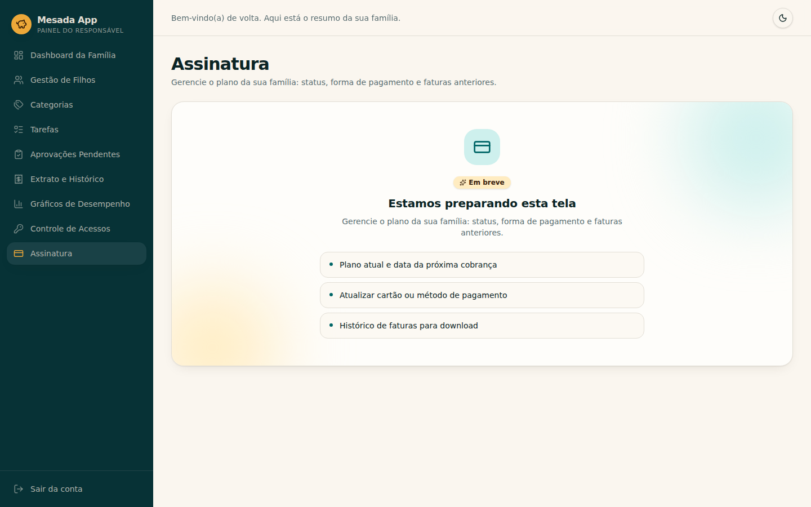
Placeholder da tela de Assinatura
3. Painel Administrativo (equipe interna)
Área separada do Painel do Responsável — mesmo endereço, rotas diferentes
(/admin/...), login e sessão totalmente independentes. É onde a
equipe interna do produto (não as famílias clientes) gerencia quem, dentro
da própria equipe, tem acesso a esse painel.
3.1 Entrar no painel administrativo
Quem: Administrador já convidadoOnde: /admin/login
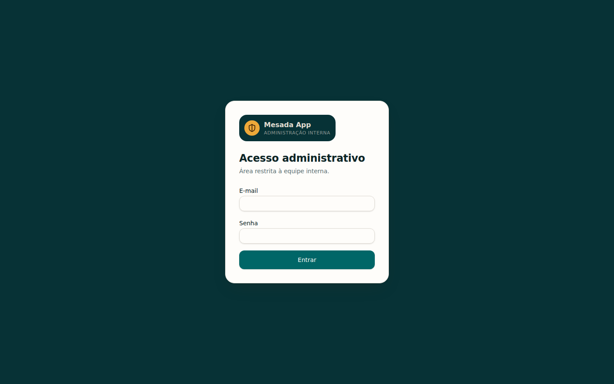
Login administrativo — visual distinto do painel da família
3.2 Trocar a senha temporária (primeiro acesso)
Quem: qualquer Administrador recém-convidadoOnde: automático após o primeiro login
Todo Administrador novo (ou que teve a senha resetada) é obrigado a trocar a senha antes de acessar qualquer outra tela.
- Informe a senha atual (a temporária recebida).
- Escolha uma nova senha (mín. 8 caracteres) e confirme.
- Clique em "Trocar senha".
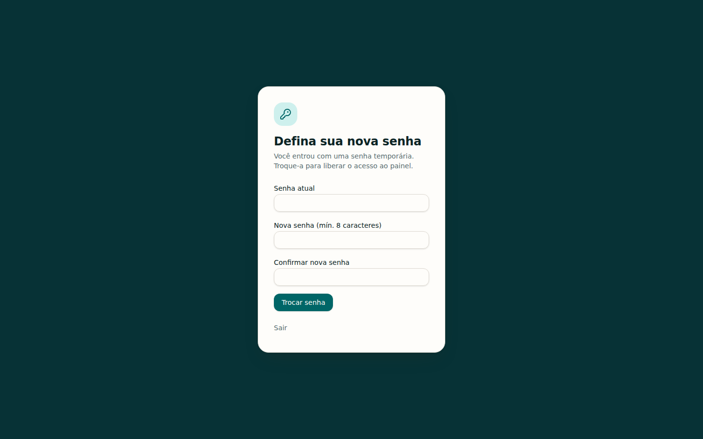
Troca de senha obrigatória antes de liberar o painel
3.3 Convidar um administrador
Quem: só o grupo OwnerOnde: /admin/administradores
- Clique em "Convidar".
- Informe Nome, E-mail e escolha o Grupo ao qual ele vai pertencer.
- Clique em "Convidar".
- Uma senha temporária é exibida — ela só aparece uma vez. Copie e envie ao novo administrador por um canal seguro.
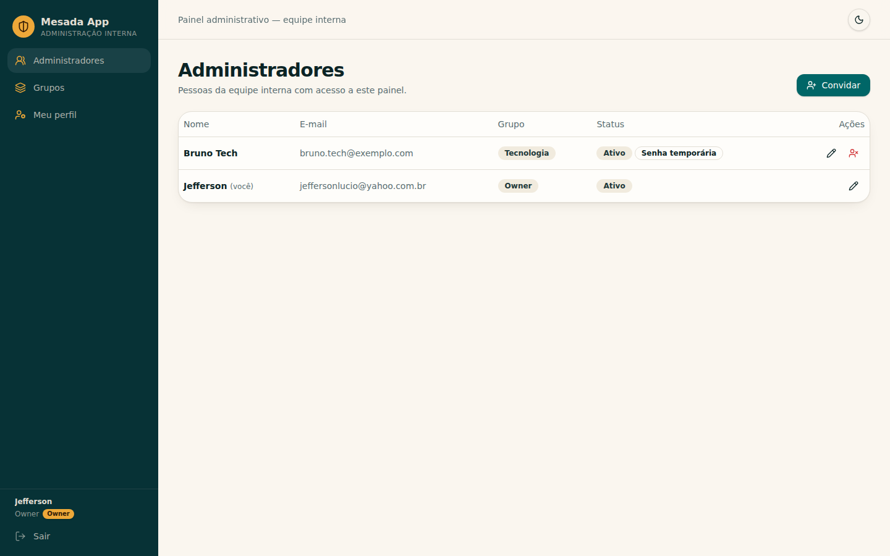
Lista de administradores — Owner e um membro do grupo Tecnologia
Quem não é Owner só enxerga esta lista em modo leitura — sem botão de convidar nem editar.
3.4 Editar ou desativar um administrador
Quem: só o grupo OwnerOnde: /admin/administradores
Editar: ícone de lápis na linha do administrador — permite mudar nome e grupo (o e-mail não pode ser alterado por aqui; é o próprio administrador quem troca o e-mail dele, em "Meu perfil").
Desativar: ícone de "remover pessoa" — bloqueado se for a própria conta do Owner logado, ou se for o último Owner ativo do sistema.
3.5 Criar e gerenciar grupos de acesso
Quem: só o grupo OwnerOnde: /admin/grupos
- Clique em "Novo grupo".
- Informe Nome e Descrição.
- Adicione chaves de permissão livremente (texto, ex.
gerenciarAdministradores) e ligue/desligue cada uma.
- Clique em "Salvar".
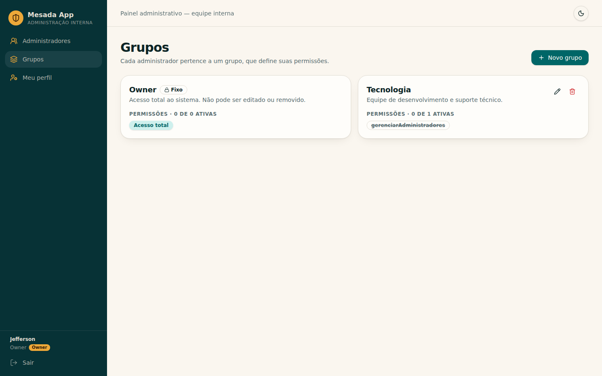
Grupo "Owner" (fixo, acesso total) e "Tecnologia" (customizado)
Importante: hoje essas chaves de permissão são só um registro — nenhuma tela ou endpoint ainda usa esse mapa para decidir o que um administrador pode fazer. A única distinção de acesso realmente aplicada é Owner vs. não-Owner. Ver docs/adendo-web.md para detalhes.
O grupo Owner é fixo: não pode ser editado, renomeado nem removido. Um grupo customizado só pode ser removido se não houver nenhum administrador vinculado a ele.
3.6 Alterar meu e-mail e minha senha
Quem: qualquer Administrador, sobre a própria contaOnde: /admin/perfil → "Meu perfil"
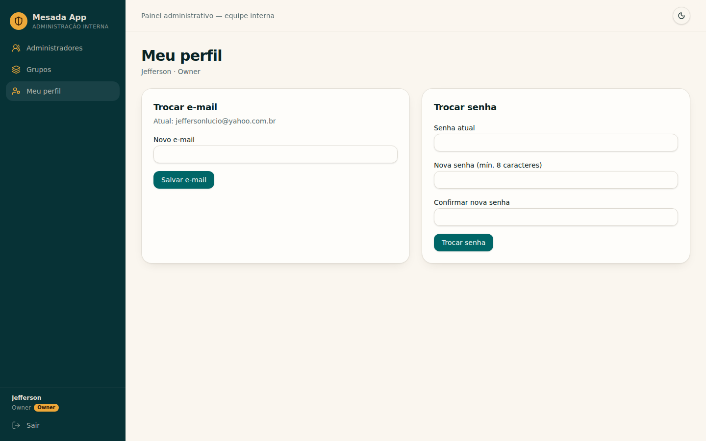
Trocar e-mail e trocar senha, lado a lado
Trocar e-mail: informe o novo e-mail e salve — bloqueado se já pertencer a outro administrador.
Trocar senha: informe a senha atual, a nova (mín. 8 caracteres) e confirme.
4. App Mobile — usuário Comum (filho)
Sem prints reais nesta seção. Nenhum dos dois apps (Android/iOS) foi
compilado ou executado de fato até hoje — Android por uma restrição de rede
do ambiente de desenvolvimento (domínio de dependências bloqueado), iOS por
exigir macOS/Xcode, indisponível neste ambiente. O código-fonte existe e foi
revisado com cuidado, mas os fluxos abaixo descrevem o comportamento
esperado, não uma tela confirmada visualmente. Detalhes técnicos completos
em docs/adendo-mobile.md.
4.1 Entrar com o código de convite
Quem: o filho, no primeiro uso do app
- Abra o app e insira o código de convite recebido do Responsável (gerado no fluxo 2.8).
- Configure um PIN ou ative a biometria do aparelho para os próximos acessos.
Esta é a única tela do app mobile que já fala de verdade com o backend hoje (POST /api/auth/convites/{codigo}/resgatar).
4.2 Consultar minhas tarefas
Quem: o filho
Lista as tarefas do ciclo atual vinculadas a ele, com status (pendente, feito, parcial, não feito).
Estrutura real de dados local e sincronização já implementadas, mas a tela hoje exibe dados de exemplo — o backend ainda não tem um endpoint de listagem de tarefas/execuções para o usuário Comum.
4.3 Marcar uma tarefa como feita, parcial ou não feita
Quem: o filho
- Abra a tarefa na lista.
- Se exigir evidência, tire uma foto (ou deixe a integração automática, ex. Strava, registrar sozinha).
- Indique a conclusão: Feito, Parcial (se a tarefa aceitar) ou Não feito.
Funciona offline: sem conexão, o registro fica numa fila local e é enviado ao servidor assim que o aparelho reconectar. Se a tarefa exigir aprovação, ela entra na fila de "Aprovações Pendentes" do Responsável (fluxo 2.10).
4.4 Consultar histórico e saldo
Quem: o filho
Tarefas de ciclos anteriores, extrato simplificado da mesada, saldo do ciclo atual e saldo devedor acumulado (se houver).
Ainda placeholder "Em breve" — sem números inventados — até o backend expor os dados necessários para o usuário Comum.
5. Referência rápida — quem pode fazer o quê
| Ação | Responsável | Responsável Financeiro | Owner (Admin) | Outro Admin | Filho (Comum) |
|---|
| Criar conta / família | ✔️ (o 1º vira Financeiro) | — | — | — | — |
| Cadastrar filhos, categorias, tarefas | ✔️ | ✔️ | — | — | — |
| Aprovar tarefas / fechar ciclo | ✔️ | ✔️ | — | — | — |
| Convidar 2º responsável | ✔️ | ✔️ | — | — | — |
| Gerenciar assinatura | — | ✔️ (quando existir) | — | — | — |
| Convidar/gerenciar administradores | — | — | ✔️ | Somente leitura | — |
| Criar/editar grupos de acesso | — | — | ✔️ | Somente leitura | — |
| Consultar/marcar tarefas próprias | — | — | — | — | ✔️ |